About Kenneth
Kenneth Cheng Man-kit is an international show jumper from Hong Kong. In 2004 he became the youngest Hong Kong citizen to qualify for the Olympic team. He is based in Belgium where he competes on the European Circuit and international events.

Experienced Showjumper
Kenneth began riding at the age of eight. By age 14, he started competing and at 17 he claimed a top 20 title at the 2006 Asian Games in Doha.
Medalist
At the 2010 Asian Games in Guangzhou, Cheng and his team won the first ever bronze medal in equestrian sports for Hong Kong. The team will compete for gold in September at Incheon.
Olympic Torchbearer
In 2008, Cheng was selected as Olympic torch bearer for Hong Kong. He carried the torch on horseback and lit the cauldron in Sha Tin stadium.
Competitor
In 2010, he became a full-time rider based in Belgium and regularly competes on the European Grand Prix circuit.
Sponsors:
The Horses
Kenneth keeps five horses in circulation during competition season. He has trained with his mounts for two years and shows his current string at national and international competitions.
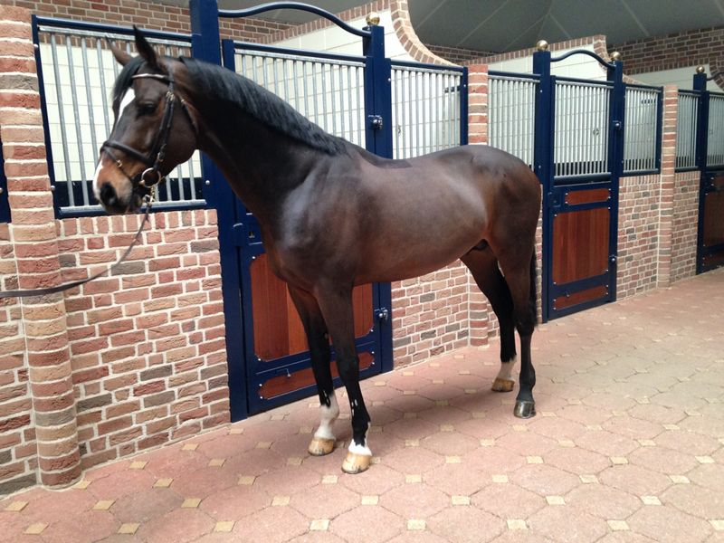
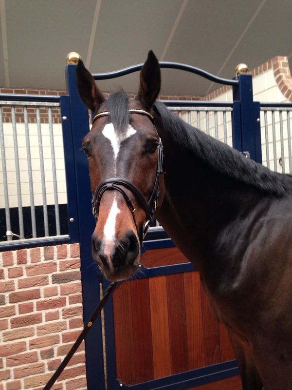
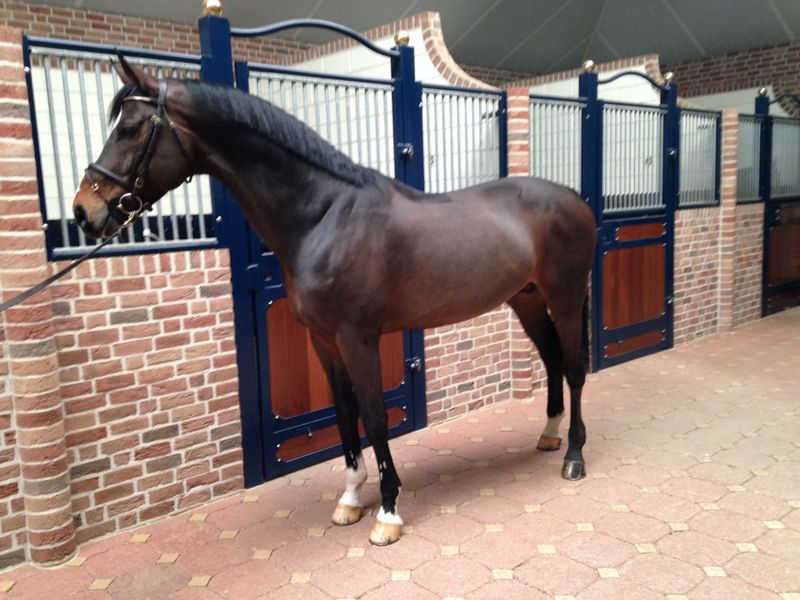
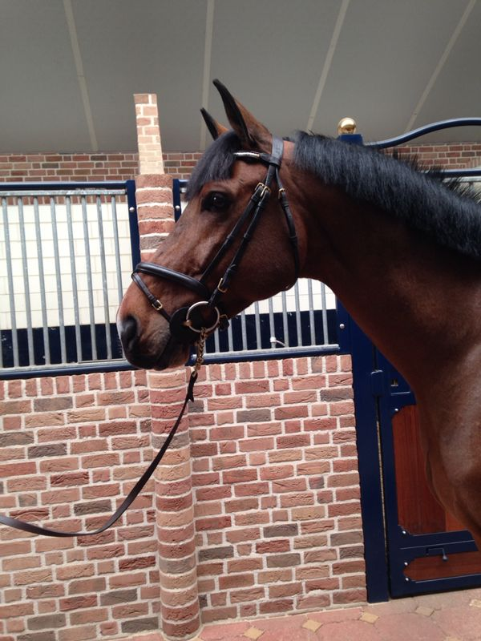
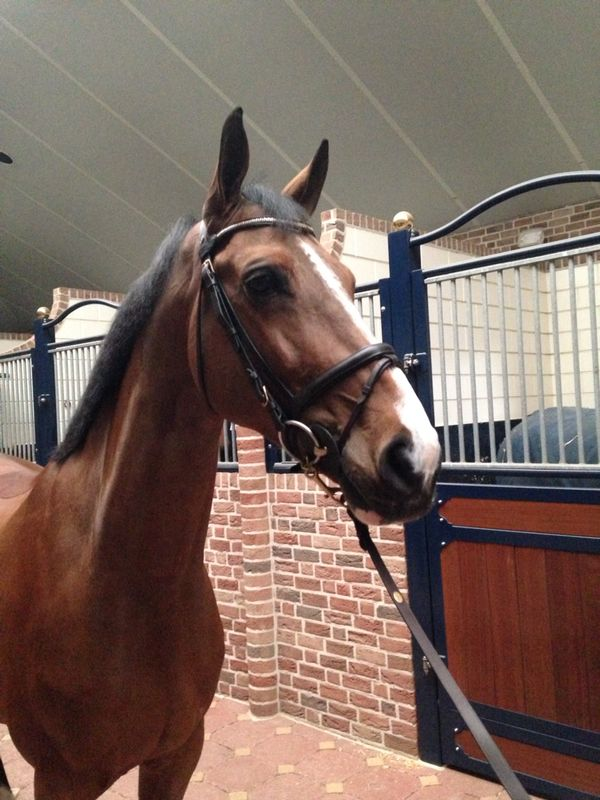
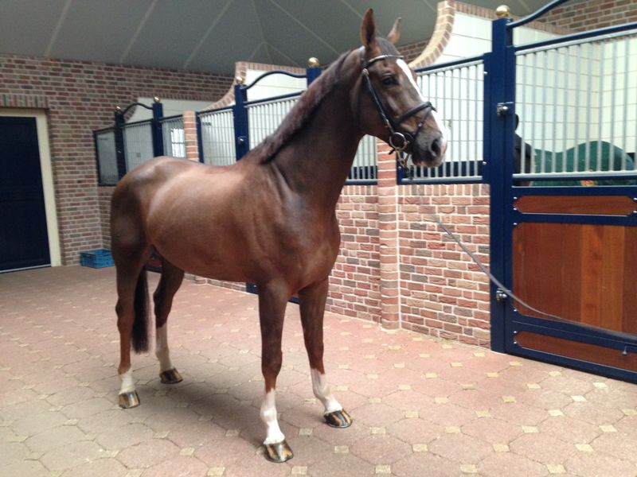
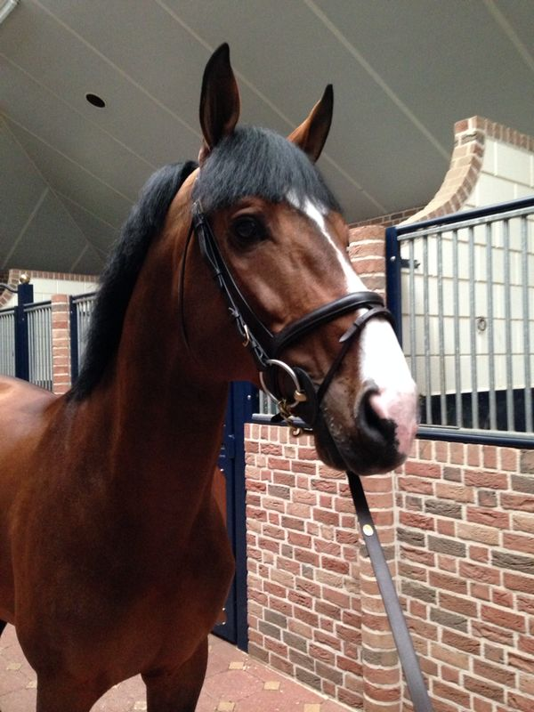
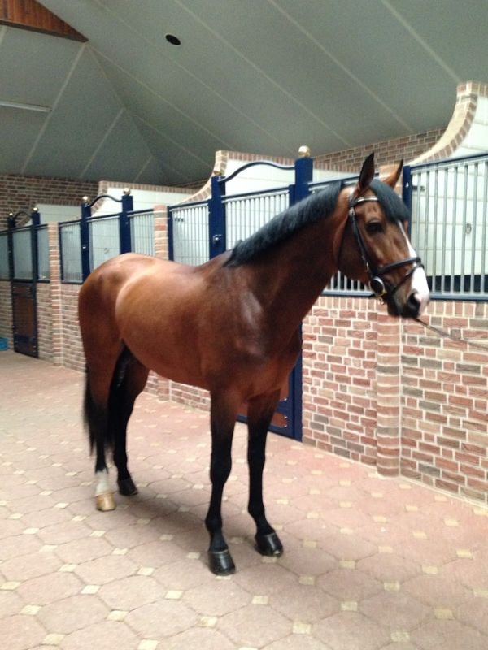
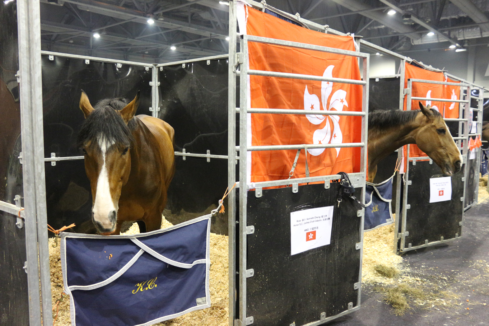
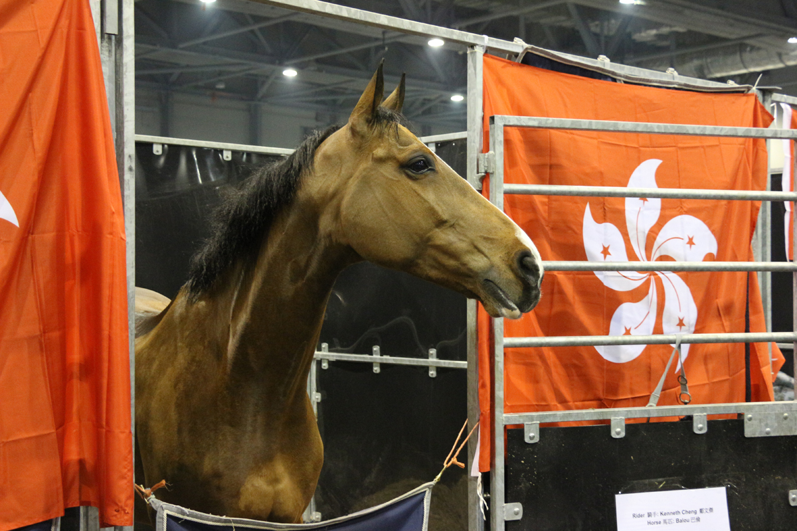
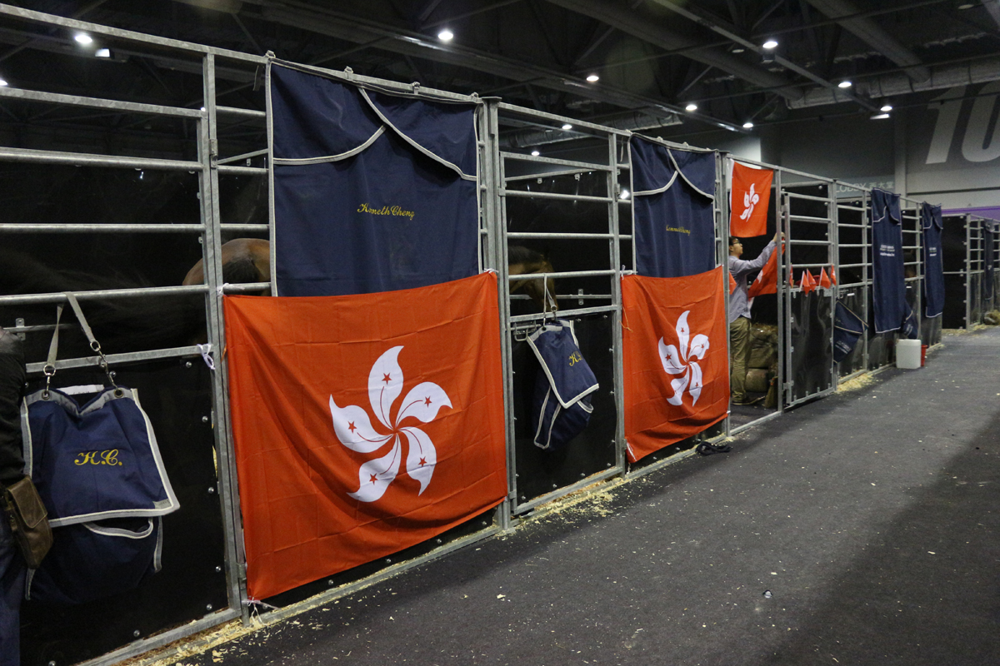
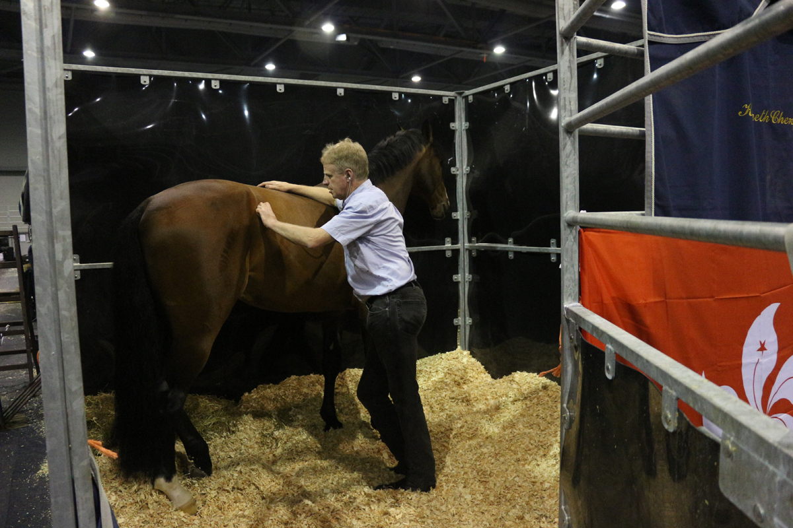
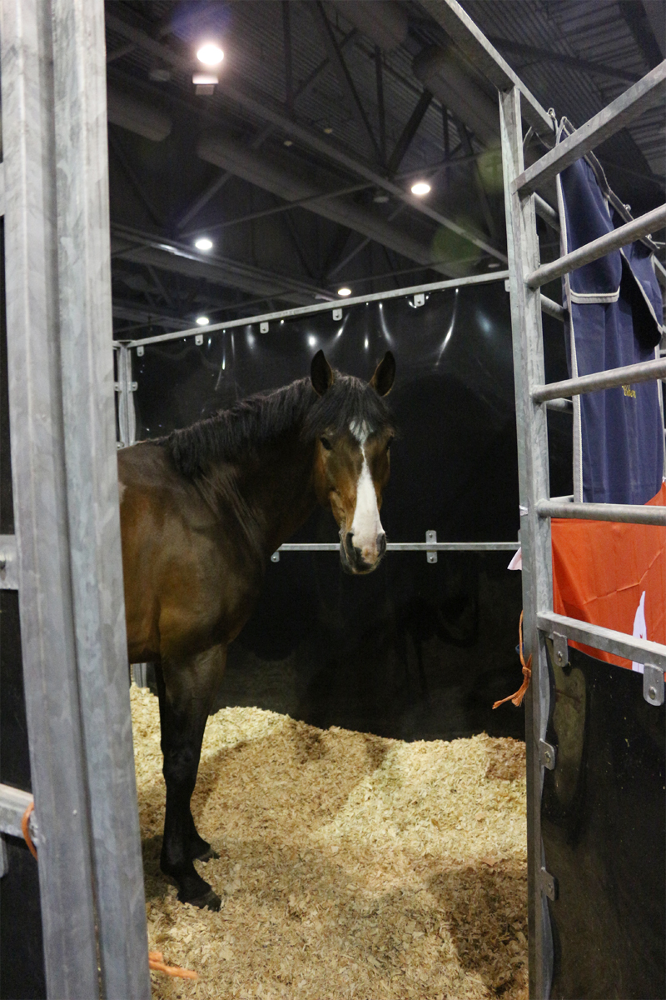
2014 Competition Schedule:
| Competition | Date |
|---|---|
| CSIO 3* San Marino-Arezzo | March 17-30 |
| CSI 3* Lanaken | April 1-13 |
| CSI 4* Hagen | April 23-27 |
| CSI 3* Mannheim | May 2-6 |
| CSI 3* Norten Hardenburg | May 23-25 |
| CSI 3* Arnhem | June 6-9 |
| CSI 3* Bonheiden | June 26-29 |
| CSIO 5* Falsterbo | July 10-13 |
| CSI 5* Treffin | July 25-27 |
| CSI 4* Munster | August 7-10 |
| CSI 3* Paderborn | September 11-14 |